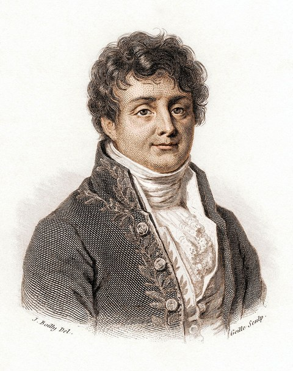
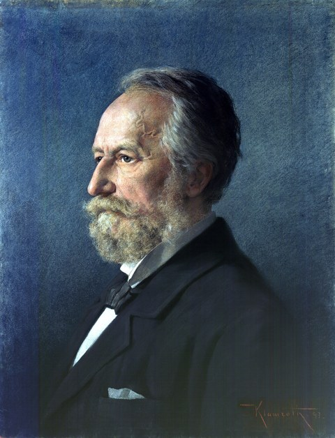
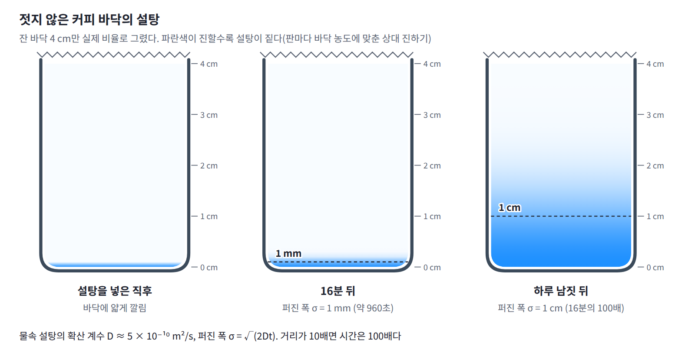
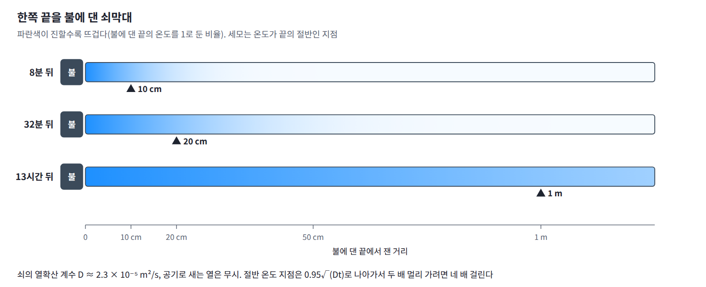
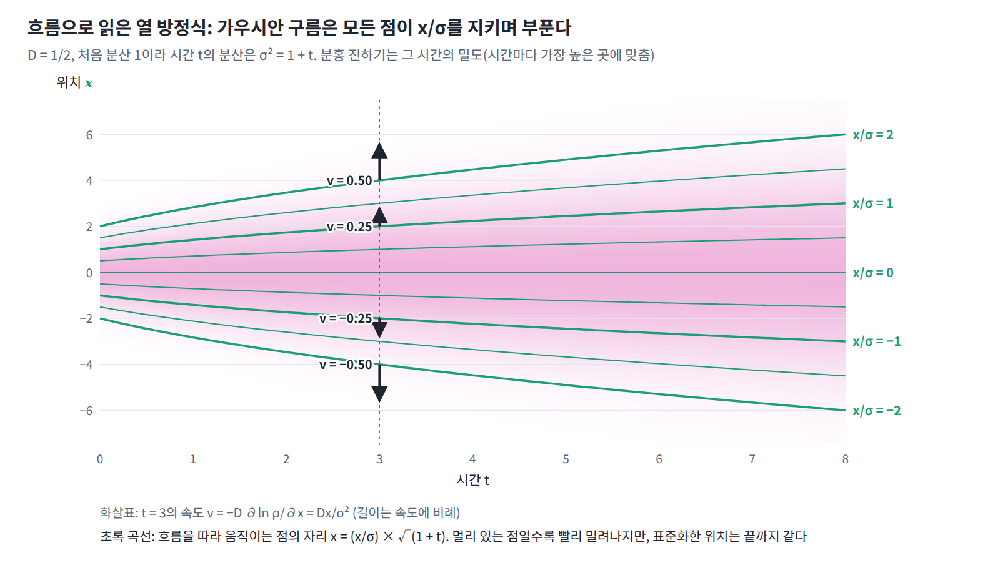
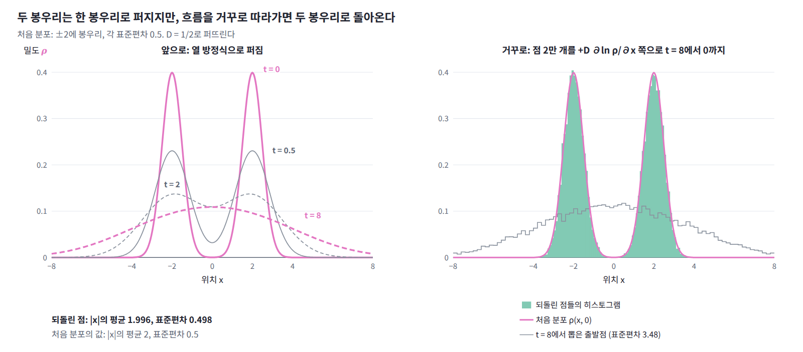

13장 — 열 방정식과 확산
이 장의 물음
그래프 신경망에서 GCN 층을 깊게 쌓으면 이상한 일이 생긴다. 가라테 동호회 회원 34명의 친구 관계 78개로 만든 그래프(자카리의 가라테 클럽)에서 회원마다 16차원 무작위 특징을 주고, 가중치와 비선형 함수는 뺀 채 GCN의 전파 단계, 곧 「자기 자신과 이웃들의 특징을 이웃 수로 정규화해 평균 내기」만 되풀이해 보자. 서로 다른 두 회원의 특징 벡터가 이루는 코사인 유사도는 평균이 처음 0.01이었다가 2층 뒤 0.41, 8층 뒤 0.85, 32층 뒤 0.999가 된다. 층을 쌓을수록 회원들이 서로 구별되지 않을 만큼 닮아 가는 것이다. 리, 한, 우는 2018년 논문에서 이것을 「GCN의 그래프 합성곱은 사실 라플라시안 평활화의 특별한 형태이며, 이것이 GCN이 잘 작동하는 핵심 이유이지만 합성곱 층이 많으면 과평활화의 우려도 낳는다」고 적었다.

생성 모델에서도 비슷한 일이 일어난다. 분산 폭발형 확산 모델은 학습 이미지에 정규분포 잡음을 더하는데, 잡음의 표준편차를 0.01에서 시작해 CIFAR-10에서는 50까지 키운다. 픽셀 값이 0과 1 사이인 이미지에 표준편차 50인 잡음을 더하면 원래 무엇이었는지 알아볼 수 없다. 송과 에르몬(2020)은 가장 큰 잡음을 「학습 데이터 두 점 사이 유클리드 거리의 최댓값만큼」 크게 잡으라고 권했다. 잡음이 커지는 동안 잡음 섞인 이미지들의 분포는 점점 넓고 밋밋해져서, 어떤 데이터에서 출발했든 거의 같은 모양이 된다. 두 경우 모두 무언가가 퍼지면서 차이가 지워진다. 무엇이 어떤 법칙으로 퍼지며, 지워진 차이는 되돌릴 수 있을까?
이 질문은 지금까지의 질문과 종류가 다르다. 볼츠만 분포, 자유에너지, 요동과 응답, 평균장 근사는 모두 계가 충분히 오래 지난 뒤 머무는 분포, 곧 평형에 대한 이야기였고, 그 식들에는 시간 t가 한 번도 나오지 않았다. 평형이 도착점이라면, 이 장부터는 계가 그 도착점까지 가는 길, 곧 시간에 따른 변화를 다룬다. 첫 대상은 가장 단순한 변화인 「고르지 않던 것이 고르게 되어 가는 과정」이고, 이 장은 다음 물음에 차례로 답한다.
- 이웃끼리 평균을 내는 일을 되풀이하면 값은 얼마나 멀리, 어떤 빠르기로 퍼질까?
- 칸을 한없이 잘게 나누고 평균을 한없이 자주 내면 이 규칙은 어떤 방정식이 될까?
- 처음 모양이 복잡하면 그 가운데 무엇이 먼저 지워질까?
- 퍼진 것을 거꾸로 돌려 처음 모양을 되찾을 수 있을까? 곧바로 되돌릴 수 없다면 다른 길은 있을까?
- 층을 깊게 쌓은 GCN과 잡음을 키워 가는 확산 모델에서는 각각 무엇이 어디에서 퍼지고 있을까?
역사: 열이 퍼지는 법칙과 삼각급수
열이 퍼지는 법칙을 처음 방정식으로 적은 사람은 나폴레옹이 임명한 지방 행정관이었다. 그가 이 방정식을 풀려고 꺼낸 도구, 곧 아무 함수나 사인과 코사인의 합으로 펼치는 방법은 발표되자마자 당대 최고의 수학자들에게 반대에 부딪혔고, 그 논쟁을 정리하는 데 이후 반세기의 해석학이 필요했다. 같은 방정식은 곧 물질의 확산에도 쓰였고, 두 세기 뒤에는 신경망 속에서 다시 나타났다.
| 연도 | 사람 | 내용 |
|---|---|---|
| 1807 | 푸리에 | 「고체 속 열의 전파에 관하여」를 파리 학사원에 제출. 라그랑주와 라플라스가 삼각급수 전개에 반대 |
| 1811 | 푸리에 | 학사원 현상 공모에서 상을 받았으나 유도의 엄밀성을 지적받음 |
| 1822 | 푸리에 | 『열의 해석적 이론』 출간 |
| 1829 | 디리클레 | 푸리에 급수가 원래 함수로 수렴하는 조건을 처음 증명 |
| 1854 | 리만 | 삼각급수에 관한 교수 자격 논문에서 리만 적분을 정의 |
| 1855 | 픽 | 물질의 확산을 열전도와 같은 식으로 기술 |
| 1870 | 칸토어 | 삼각급수 표현의 유일성을 증명하고, 예외 점들의 집합을 다루다 집합론으로 나아감 |
| 2018 | 리·한·우 | GCN의 그래프 합성곱이 라플라시안 평활화이며 층이 많으면 과평활화가 일어남을 지적 |
| 2021 | 송 외 | 잡음을 연속 시간으로 더하는 확산 모델의 틀과 확률 흐름 ODE |
| 2023 | 리사넨·헤이노넨·솔린 | 이미지 위에서 열 방정식을 거꾸로 돌려 이미지를 만드는 생성 모델 |
조제프 푸리에는 1768년 프랑스 오세르에서 재단사의 아들로 태어나 아홉 살에 고아가 되었다. 1798년 나폴레옹의 이집트 원정에 과학 자문으로 따라가 카이로에 세운 이집트 학사원의 서기를 맡았고, 돌아온 뒤 1801년에는 나폴레옹의 임명으로 그르노블이 있는 이제르 도의 지사가 되었다. 도로 공사 같은 행정 일을 맡은 그가 열의 전파를 실험하고 계산하기 시작한 곳이 바로 그르노블이다. 1807년 12월 21일 그는 파리 학사원에 「고체 속 열의 전파에 관하여」를 제출했지만, 심사를 맡은 라그랑주, 라플라스, 몽주, 라크루아 가운데 라그랑주와 라플라스가 함수를 삼각급수로 펼치는 부분에 반대해 논문은 출간되지 못했다. 학사원은 1811년 고체 속 열의 전파를 현상 공모 주제로 내걸었고 푸리에가 상을 받았는데, 심사평에는 「저자가 방정식에 이르는 방식은 어려움에서 자유롭지 않다」는 지적이 붙었다. 그는 1822년에야 『열의 해석적 이론』으로 이 연구를 펴냈다.

푸리에가 한 일은 두 가지였다. 먼저 열이 온도가 높은 곳에서 낮은 곳으로 흐르고 그 흐름의 크기가 온도의 기울기에 비례한다는 법칙에서 출발해, 한 점의 온도가 변하는 빠르기는 주변 온도의 평균과 자기 온도의 차이에 비례한다는 방정식을 얻었다. 그리고 이 방정식을 풀려고 처음 온도 분포를 사인과 코사인 무늬의 합으로 나누었다. 무늬 하나하나는 모양을 유지한 채 크기만 줄어들고, 촘촘한 무늬일수록 빨리 줄어든다. 문제는 모서리가 있거나 끊어진 함수까지 이런 합으로 쓸 수 있다는 그의 주장이었다. 매끄러운 사인들을 더해서 어떻게 모서리가 생기느냐는 반론에 푸리에는 엄밀한 증명을 내놓지 못했다. 그는 『열의 해석적 이론』 서론에 「자연을 깊이 연구하는 것이 수학적 발견의 가장 풍부한 원천이다」라고 적었는데, 이 경우에는 그 말이 문자 그대로 이루어졌다.
삼각급수가 언제 원래 함수로 수렴하는지를 처음 증명한 사람은 1829년의 디리클레였다. 1854년 리만은 교수 자격 논문에서 삼각급수로 나타낼 수 있는 함수를 다루려고 적분을 새로 정의했는데, 이것이 오늘날 해석학 수업에서 배우는 리만 적분이다(논문은 그가 죽은 뒤에 출간되었다). 1870년 칸토어는 한 함수를 삼각급수로 나타내는 방법이 하나뿐임을 증명했고, 급수가 수렴하지 않아도 되는 예외 점들을 점점 넓혀 가다가 점들의 집합 자체를 연구하게 되었다. 열이 퍼지는 문제가 함수, 수렴, 적분, 집합이라는 해석학의 기초 개념을 차례로 엄밀하게 다듬도록 몰아붙인 셈이다.
1855년 독일의 생리학자 아돌프 픽은 소금이 물속에서 퍼지는 현상을 푸리에의 열전도와 같은 식으로 기술했다. 소금의 흐름이 농도의 기울기에 비례한다는 이 법칙은 픽의 법칙이라 불린다. 온도 대신 농도를 넣었을 뿐 방정식은 같아서, 이 방정식은 열 방정식과 확산 방정식이라는 두 이름을 함께 갖게 되었다.

작은 문제: 이웃 넷의 평균을 되풀이하면
정사각 격자의 칸마다 수를 하나씩 적는다. 처음에는 가운데 한 칸에만 1을 두고 나머지는 모두 0이다. 한 번 갱신할 때 모든 칸을 동시에 위, 아래, 왼쪽, 오른쪽 이웃 넷의 평균으로 바꾼다.
이 규칙은 여러 곳에 나온다. 이미지에서 픽셀마다 이웃 픽셀의 평균을 내면 블러가 되고, 그래프에서 노드마다 이웃의 특징을 평균 내면 GCN의 전파가 된다. 2차원 격자의 이징 모형에 평균장 근사를 쓰면 스핀마다 평균 방향이 m ← tanh(βJ × 이웃 넷의 m의 합)으로 갱신되는데, kT = 4J에서 m이 0 근처이면 tanh(x) ≈ x이므로 이 갱신도 정확히 이웃 넷의 평균이 된다.
몇 번 갱신해 보자. 한 번 뒤에는 가운데의 1이 이웃 네 칸에 1/4씩 나뉘고 가운데는 0이 된다. 두 번 뒤에는 가운데가 다시 1/4이 되고, 가운데에서 두 칸 떨어진 칸들에도 값이 생긴다. 얼마나 퍼졌는지는 칸의 값을 가중치로 써서 잰다. 값의 합이 1이므로 칸마다 처음 자리에서 떨어진 거리의 제곱에 그 칸의 값을 곱해 모두 더하면 거리 제곱의 가중 평균이 되고, 그 제곱근을 퍼진 거리라 하자.
| 되풀이 횟수 n | 값의 합 | 퍼진 거리 | 퍼진 거리² ÷ n | 가운데 칸의 값 |
|---|---|---|---|---|
| 1 | 1 | 1.000 | 1 | 0 |
| 2 | 1 | 1.414 | 1 | 0.25 |
| 4 | 1 | 2.000 | 1 | 0.1406 |
| 25 | 1 | 5.000 | 1 | 0 |
| 100 | 1 | 10.000 | 1 | 0.00633 |
| 400 | 1 | 20.000 | 1 | 0.00159 |
세 가지가 눈에 띈다. 첫째, 값의 합은 몇 번을 되풀이해도 정확히 1이다. 평균 내기는 값을 옮길 뿐 만들거나 없애지 않는다. 둘째, 퍼진 거리는 어림이 아니라 정확히 횟수의 제곱근이다. 25번에 5칸, 100번에 10칸, 400번에 20칸이어서, 두 배 멀리 가려면 네 배 오래 되풀이해야 한다. 셋째, 되풀이 횟수가 홀수이면 가운데 칸이 0이다. 칸을 바둑판처럼 두 색으로 칠하면 값은 한 번 갱신할 때마다 한 색의 칸들에서 다른 색의 칸들로 통째로 건너가서, 짝수 번째에는 가운데와 같은 색의 칸에만, 홀수 번째에는 다른 색의 칸에만 값이 있다. 퍼진 거리는 왜 정확히 횟수의 제곱근이며, 칸의 색이 번갈아 비는 것은 무엇을 뜻할까? 그리고 칸을 한없이 잘게 나누고 갱신을 한없이 자주 하면 이 규칙은 어떤 방정식이 될까?

패턴: 거리가 아니라 거리의 제곱이 쌓인다
이웃 넷의 평균으로 바꾸는 규칙은 거꾸로 보면 모든 칸이 자기 값을 네 등분해 이웃 네 칸에 하나씩 나눠 주는 것과 같다. 위치 x인 칸의 값은 한 번 갱신한 뒤 x + s인 네 칸에 1/4씩 가 있고, 여기서 s는 (1, 0), (−1, 0), (0, 1), (0, −1) 가운데 하나인 한 칸 이동이다. 그러면 거리 제곱의 가중 평균은 다음과 같이 바뀐다.
가운데 항이 사라지는 것이 핵심이다. 네 이동이 좌우와 상하로 대칭이라 평균 이동이 0이므로, 값이 지금 어디에 있든 한 번 나눠 줄 때마다 거리 제곱의 가중 평균은 정확히 1씩 는다. 거리 자체는 가까워지는 쪽과 멀어지는 쪽이 섞여서 한 번에 얼마씩 는다고 말할 수 없지만, 거리의 제곱은 처음 모양과 상관없이 매번 같은 만큼 는다. 그래서 n번 뒤 거리 제곱의 평균은 n이고 퍼진 거리는 √n이다. 교차항이 0이라 제곱만 쌓이는 이 계산은 서로 직각인 두 변으로 빗변을 만들 때 제곱끼리 더해지는 피타고라스 정리와 같다. 한 축만 보면 네 이동 가운데 둘만 그 축으로 움직이므로, 가로 방향의 분산은 한 번에 1/2씩 는다.

퍼지는 모양도 곧 정해진다. 평균 내기를 여러 번 겹치면 처음 모양과 상관없이 종 모양, 곧 가우시안이 되는데, 동전을 많이 던져 앞면 수를 세면 종 모양 분포가 나오는 것과 같은 이유다. 100번 뒤 가운데 칸의 값 0.00633은, 가로와 세로 분산이 각각 50인 2차원 가우시안에서 칸 하나에 해당하는 값 1/(100π) = 0.00318의 두 배와 거의 같다. 두 배인 까닭은 값이 가운데와 같은 색의 칸, 곧 절반의 칸에만 모여 있기 때문이다. 가운데에서 10칸 떨어진 칸도 0.00235 대 0.00234로 맞는다.
칸의 색이 번갈아 비는 것은 모든 칸이 동시에, 자기 값을 하나도 남기지 않고 이웃에게만 나눠 주기 때문이다. 절반은 제자리에 남기고 절반만 이웃에게 나눠 주는 게으른 평균, 곧 u ← (u + 이웃 넷의 평균)/2로 바꾸면 이런 일이 없다. 한 번에 늘어나는 거리의 제곱이 1/2로 줄어 100번 뒤 퍼진 거리는 √50 = 7.07이고, 가운데 칸의 값 0.006367은 가로와 세로 분산이 각각 25인 가우시안의 값 1/(50π) = 0.006366과 맞는다.
정리하면, 이웃끼리 평균을 내는 규칙은 값의 합을 지키면서, 평균 이동이 0인 한 처음 모양과 상관없이 거리의 제곱을 매번 같은 양만큼 늘린다. 그래서 퍼진 거리는 되풀이 횟수의 제곱근을 따르고, 퍼진 모양은 가우시안이 된다.
정의: 열 방정식
그렇다면 칸을 한없이 잘게 나누고 갱신을 한없이 자주 하면, 이웃 넷의 평균을 내는 규칙은 어떤 방정식이 될까? 칸 간격을 a, 한 번 갱신하는 데 걸리는 시간을 τ라 하자. 한 번 갱신할 때의 변화는 「이웃 넷의 평균 − 자기 값」, 곧 「(이웃 넷의 합) − 4 × 자기 값」의 1/4이다. 이웃 넷의 값을 테일러 전개해 더하면 1차 항은 좌우와 상하로 상쇄되고 2차 항만 남아서, 이 차이는 a² × (가로 2계 미분 + 세로 2계 미분)에 가까워진다. 양변을 τ로 나누고 a와 τ를 0으로 보내면 다음 방정식이 나온다.
축마다 2계 미분을 더한 연산자 ∇²는 한 점의 값이 주변 평균보다 얼마나 낮은지를 재는데, 이것을 라플라시안(Laplacian)이라 부른다. 그리고 ∂u/∂t = D∇²u를 열 방정식 (값이 주변 평균과의 차이에 비례하는 빠르기로 바뀌는 방정식, heat equation)이라 한다. u가 물질의 농도나 확률밀도이면 같은 식을 확산 방정식(diffusion equation)이라고도 부른다. 한 점의 값이 주변 평균보다 낮으면 ∇²u가 양수라 값이 오르고, 높으면 내려간다. 주변과 같아질 때까지 움직이므로 열 방정식은 고르게 만드는 방정식이다.
정의: 열핵
작은 문제에서는 한 칸에 둔 1이 퍼진 거리가 정확히 횟수의 제곱근을 따랐고, 모양은 가우시안에 가까워졌다. 그렇다면 연속인 열 방정식에서 한 점에 둔 1은 정확히 어떤 모양으로, 얼마나 넓게 퍼질까? 방정식에 넣어 확인해 보면 답은 가우시안이다.
이 해를 열핵 (한 점에 둔 값이 시간 t 뒤 퍼진 모양, heat kernel)이라 한다. 한 축 방향의 분산이 σ² = 2Dt이므로, 격자에서 D = 1/4, t = n이면 가로 분산이 n/2, 2차원 거리 제곱의 평균이 n으로 작은 문제의 결과와 정확히 맞는다. 처음 값이 여러 곳에 흩어져 있으면 해는 곳곳에 둔 열핵을 그 값으로 가중해 더한 것, 곧 처음 모양과 가우시안의 합성곱이다. 방정식이 선형이라 한 점에서 출발한 해들을 겹쳐 쓸 수 있기 때문이다.
정의: 확산 계수
열핵의 넓이는 σ² = 2Dt로 자라므로, 얼마나 빨리 퍼지는지는 D 하나에 달려 있다. 그렇다면 D는 무엇을 재는 양이고, 실제 물질에서는 얼마나 클까? σ²가 넓이이고 t가 시간이므로 D의 단위는 m²/s이다. 이 D를 확산 계수 (단위 시간에 퍼지는 넓이, diffusion coefficient)라 하며, 작은 문제의 격자에서는 a = τ = 1이므로 D = 1/4이다.
젓지 않은 커피 바닥에서 설탕이 녹아 퍼지는 것이 이 과정이다. 물속 설탕 분자의 확산 계수는 약 5 × 10⁻¹⁰ m²/s여서 한 축 방향으로 1 mm 퍼지는 데는 16분쯤 걸리지만, 1 cm 퍼지려면 그 100배인 하루 남짓이 걸린다. 설탕을 넣고 젓는 까닭은 먼 거리를 확산에 맡기지 않고 물의 흐름으로 옮기기 위해서다. 한쪽 끝을 불에 대 일정한 온도로 두는 쇠막대도 같다. 쇠의 열확산 계수는 약 2.3 × 10⁻⁵ m²/s이고, 공기로 새는 열을 무시하면 온도가 끝의 절반만큼 오른 지점은 0.95√(Dt)로 나아간다. 10 cm까지는 8분이지만 20 cm까지는 32분, 1 m까지는 반나절이 넘게 걸린다.


일반화: 푸리에 모드
한 점에서 출발한 해는 열핵으로 구했다. 그렇다면 처음 모양이 복잡하면 어떻게 풀까? 그리고 그 모양의 어느 부분이 먼저 지워질까? 푸리에의 방법은 무늬 하나에서 출발한다. cos kx처럼 파장이 2π/k인 무늬에 라플라시안을 쓰면 −k² cos kx가 되어 모양은 그대로이고 크기만 −k²배가 된다. 그러니 이 무늬는 열 방정식을 따라 모양을 유지한 채 크기만 e^(−Dk²t)로 줄어든다. 처음 모양을 이런 무늬들의 합으로 나누면 무늬마다 따로 줄어들고, 방정식이 선형이므로 해는 줄어든 무늬들의 합이다.

k는 길이 2π 안에 무늬가 몇 번 되풀이되는지, 곧 2π/파장을 나타내며 파수(wavenumber)라 부른다. 파수 k인 무늬를 푸리에 모드 (라플라시안을 써도 모양이 바뀌지 않는 무늬, Fourier mode)라 한다. 줄어드는 빠르기가 k²에 비례하므로 촘촘한 무늬일수록 빨리 사라지고, 크기가 1/e로 줄어드는 시간 1/(Dk²)은 파장의 제곱에 비례한다. D = 1/4인 격자에서 파장 4칸 무늬는 1.6번, 32칸 무늬는 104번 만에 1/e로 줄어든다. 이미지를 흐리게 하면 머리카락 같은 가는 선이 먼저 사라지고 얼굴의 윤곽은 오래 남는 까닭이다. 열핵의 넓이가 σ² = 2Dt로 자라는 것도 이 식에서 나온다. 한 점은 모든 파수의 무늬를 같은 크기로 담고 있고, 시간 t 뒤의 모양은 크기가 e^(−Dk²t)인 무늬들의 합, 곧 분산이 2Dt인 가우시안이다.
격자에서도 무늬는 무늬로 남는다. 가로 파수 k₁, 세로 파수 k₂인 무늬에 이웃 넷의 평균을 한 번 쓰면 크기가 (cos k₁ + cos k₂)/2배가 되고, 파수가 작으면 이 값이 1 − (k₁² + k₂²)/4 ≈ e^(−k²/4), 곧 D = 1/4인 연속 방정식의 e^(−Dk²)과 같아진다. 차이는 가장 촘촘한 무늬에서 난다. 한 칸마다 부호가 바뀌는 바둑판 무늬, 곧 k₁ = k₂ = π인 무늬는 한 번 평균 낼 때마다 −1배가 되어, 크기는 그대로인 채 부호만 번갈아 바뀐다. 작은 문제에서 칸의 색이 번갈아 빈 것은 한 칸에 둔 1에 들어 있던 바둑판 무늬가 영원히 사라지지 않았기 때문이다. 게으른 평균은 배율 λ를 (1 + λ)/2로 바꿔 −1을 0으로 옮기므로, 모든 무늬의 배율이 0과 1 사이에 들어와 부호가 바뀌는 무늬가 없다.
일반화: 불안정한 문제
앞으로 가는 동안 무늬마다 e^(−Dk²t)로 줄어든다면, 나중 모양의 무늬마다 e^(+Dk²t)를 곱해 처음 모양을 되찾을 수 있지 않을까? 시간을 거꾸로 돌리면 이 그림이 뒤집힌다. 거꾸로 가는 열 방정식에서 무늬는 e^(+Dk²t)로 자라고, 가장 빨리 사라졌던 촘촘한 무늬가 가장 빨리 커진다. D = 1/2, t = 8이면 파수 1, 2, 3, 5인 무늬가 각각 55배, 8.9 × 10⁶배, 4.3 × 10¹⁵배, 2.7 × 10⁴³배로 커진다. 수학적으로는 나중 모양이 처음 모양을 하나로 정하지만, 앞으로 가는 동안 파수 3인 무늬는 e^(−36) ≈ 2.3 × 10⁻¹⁶배로 줄어 배정밀도 부동소수점의 반올림 오차보다 작아진다. 그 뒤로 이 무늬의 기록은 반올림 오차에 묻히고, 거꾸로 돌리면 그 오차가 10¹⁵배 넘게 부풀어 답을 덮는다. 격자를 촘촘히 할수록 더 큰 파수가 들어오므로 오히려 더 빨리 망가진다. 이처럼 자료의 작은 오차가 답에서 한없이 커지는 문제를 불안정한 문제 (자료를 조금만 바꿔도 답이 크게 바뀌는 문제, ill-posed problem)라 하며, 거꾸로 가는 열 방정식이 그 대표적인 예다.
일반화: 스코어
밀도 전체를 무늬로 나누어 되돌리는 길이 막혔다면, 점 하나하나를 되돌릴 수는 없을까? 그러려면 퍼지는 동안 각 자리의 질량이 어느 쪽으로 얼마나 빨리 움직이는지 알아야 한다. 이를 위해 열 방정식을 전혀 다르게 읽어 보자. 퍼지는 양 u를 합이 1인 확률밀도 ρ로 두면, 밀도는 어디서 생기거나 사라지지 않고 옆으로 흘러갈 뿐이다. 각 자리의 질량이 속도 v로 움직인다고 하면 한 점의 밀도는 들어온 흐름에서 나간 흐름을 뺀 만큼 바뀌는데, 이것이 연속 방정식이다. 한편 푸리에와 픽의 법칙은 흐름의 밀도 ρv가 밀도의 기울기에 비례해 높은 곳에서 낮은 곳으로 향한다고 말한다. 두 식을 합치면 열 방정식이 되고, 흐름의 속도만 따로 떼어 내면 다음과 같다.
∇ln ρ를 확산 모델의 용어로 스코어 (로그 밀도가 가장 가파르게 오르는 방향과 그 가파름, score)라 한다. 통계학에서 스코어는 흔히 매개변수 θ에 대한 로그우도의 기울기를 가리키지만, 확산 모델에서는 위치 x에 대한 기울기를 가리킨다. 식이 말하는 것은 간단하다. 각 자리의 질량은 로그 밀도가 내려가는 쪽으로 움직이고, 밀도가 자기 크기에 비해 가파르게 줄어드는 곳일수록 빨리 움직인다. 분산이 σ²인 가우시안이라면 스코어가 −x/σ²이므로 v = Dx/σ²이고, 원점에서 먼 자리일수록 빨리 바깥으로 밀려난다. 이때 x/σ는 시간이 지나도 변하지 않는다. 가우시안 구름은 모든 점이 표준화한 위치를 지키며 고르게 부풀 뿐이다.

일반화: 흐름을 거꾸로 따라가기
각 자리의 질량이 움직이는 속도를 알았으니, 이제 되돌리는 물음으로 돌아가 보자. 이 흐름을 거꾸로 따라가면 퍼지기 전의 분포를 되찾을 수 있을까?
되찾을 수 있다. 어느 시간에서 점들을 v와 반대로, 곧 +D∇ln ρ 쪽으로(ρ는 그 시간의 밀도) 조금씩 옮기면 한 걸음 앞의 분포가 된다. 이 길은 불안정하지 않다. 점 하나하나가 매끄러운 속도장을 따라 움직일 뿐, 반올림 오차 아래로 가라앉은 촘촘한 무늬를 끝 모양에서 되살릴 필요가 없기 때문이다. 대신 모든 시간의 스코어를 알아야 한다. 촘촘한 무늬의 정보는 끝 모양에서는 사라졌지만 이른 시간의 스코어 속에는 남아 있다. ±2에 봉우리를 둔 두 봉우리 분포(각 표준편차 0.5)를 D = 1/2로 t = 8까지 퍼뜨리면 가운데가 가장 높은 한 봉우리가 되는데, 여기서 뽑은 점 2만 개를 정확한 스코어로 t = 0까지 거꾸로 흘려 보내면 |x|의 평균이 1.996, 표준편차가 0.498로 두 봉우리가 그대로 돌아온다. 확산 모델이 거꾸로 가는 길을 찾을 때 열 방정식을 거꾸로 푸는 대신 스코어를 신경망으로 배우는 이유가 여기에 있다.

보기: 코드
격자에서 이웃 평균을 되풀이하기
작은 문제의 격자를 그대로 돌려 퍼진 거리와 칸 색이 번갈아 비는 현상, 게으른 평균을 확인한다. 이어서 줄무늬 하나에 평균을 한 번 쓸 때의 배율을 연속 방정식의 e^(−Dk²)과 비교한다.
import numpy as np
L = 241; c = L // 2 # 241 × 241 격자, 가운데 칸에서 출발
X, Y = np.meshgrid(np.arange(L) - c, np.arange(L) - c, indexing='ij')
R2 = X**2 + Y**2 # 처음 자리에서 잰 거리의 제곱
def neighbor_avg(u): # 모든 칸을 동시에 이웃 넷의 평균으로
return (np.roll(u, 1, 0) + np.roll(u, -1, 0) + np.roll(u, 1, 1) + np.roll(u, -1, 1)) / 4
u = np.zeros((L, L)); u[c, c] = 1.0 # 한 칸에만 1
lazy = u.copy() # 게으른 평균: 절반은 제자리에 남긴다
for n in range(1, 401):
u = neighbor_avg(u)
lazy = (lazy + neighbor_avg(lazy)) / 2
if n in (25, 100, 400):
odd = (X + Y) % 2 == 1
print(f"n = {n:3d}: 합 {u.sum():.4f}, 퍼진 거리 {np.sqrt((u * R2).sum()):.4f}, "
f"홀수 칸의 몫 {u[odd].sum():.1f}, 가운데 {u[c, c]:.6f} (가우시안 {2 / (np.pi * n):.6f}) | "
f"게으른 평균: 퍼진 거리 {np.sqrt((lazy * R2).sum()):.4f}, 가운데 {lazy[c, c]:.6f}")
# 줄무늬 cos(kx) 하나에 이웃 평균을 한 번 쓰면 몇 배가 되나 (격자) 대 e^(−Dk²) (연속, D = 1/4)
for wavelength in (2, 4, 8, 32):
k = 2 * np.pi / wavelength
stripe = np.cos(k * X).astype(float)
ratio = neighbor_avg(stripe)[c, c] / stripe[c, c]
print(f"파장 {wavelength:2d}칸: 한 번에 {ratio:+.4f}배, 연속 근사 e^(−k²/4) = {np.exp(-k**2 / 4):.4f}")
checker = np.where((X + Y) % 2 == 0, 1.0, -1.0)
print(f"바둑판 무늬: 한 번에 {neighbor_avg(checker)[c, c] / checker[c, c]:+.1f}배")
# n = 25: 합 1.0000, 퍼진 거리 5.0000, 홀수 칸의 몫 1.0, 가운데 0.000000 (가우시안 0.025465) | 게으른 평균: 퍼진 거리 3.5355, 가운데 0.025488
# n = 100: 합 1.0000, 퍼진 거리 10.0000, 홀수 칸의 몫 0.0, 가운데 0.006334 (가우시안 0.006366) | 게으른 평균: 퍼진 거리 7.0711, 가운데 0.006367
# n = 400: 합 1.0000, 퍼진 거리 20.0000, 홀수 칸의 몫 0.0, 가운데 0.001590 (가우시안 0.001592) | 게으른 평균: 퍼진 거리 14.1421, 가운데 0.001592
# 파장 2칸: 한 번에 +0.0000배, 연속 근사 e^(−k²/4) = 0.0848
# 파장 4칸: 한 번에 +0.5000배, 연속 근사 e^(−k²/4) = 0.5396
# 파장 8칸: 한 번에 +0.8536배, 연속 근사 e^(−k²/4) = 0.8571
# 파장 32칸: 한 번에 +0.9904배, 연속 근사 e^(−k²/4) = 0.9904
# 바둑판 무늬: 한 번에 -1.0배
퍼진 거리는 25·100·400번에 정확히 5·10·20이고, 게으른 평균에서는 √(n/2)이다. 파장이 8칸 이상인 무늬에서는 격자의 배율이 연속 근사와 거의 같지만, 파장 2칸 무늬는 한 번에 사라지고 바둑판 무늬는 −1배가 되어 영원히 남는다.
열 방정식을 거꾸로 풀기와 흐름을 거꾸로 따라가기
두 봉우리 분포를 D = 1/2로 t = 8까지 퍼뜨린 뒤 두 방법으로 되돌린다. 첫째는 푸리에 성분마다 e^(Dk²t)를 곱하는 것이고, 둘째는 점들을 스코어를 따라 거꾸로 옮기는 것이다.
import numpy as np
D, T, s0 = 0.5, 8.0, 0.5 # D = 1/2이면 시간 t가 곧 더해진 분산 2Dt
mus = np.array([-2.0, 2.0]) # 처음 분포: ±2에 봉우리, 각 표준편차 0.5
def rho(x, t): # 열 방정식의 정확한 해: 봉우리마다 분산이 s0² + 2Dt
v = s0**2 + 2 * D * t
return sum(np.exp(-(x - m)**2 / (2 * v)) for m in mus) / (2 * np.sqrt(2 * np.pi * v))
def score(x, t): # ∂ ln ρ / ∂x (넘침을 막으려고 로그 가중치로 계산)
v = s0**2 + 2 * D * t
lw = np.array([-(x - m)**2 / (2 * v) for m in mus]); w = np.exp(lw - lw.max(0)); w /= w.sum(0)
return ((mus[:, None] - x) * w).sum(0) / v
# (1) 거꾸로 푸는 열 방정식: 푸리에 성분마다 e^(+Dk²T)를 곱해 되돌린다
x = np.linspace(-20, 20, 800, endpoint=False); k = 2 * np.pi * np.fft.fftfreq(800, d=x[1] - x[0])
U_T = np.fft.fft(rho(x, T))
for kc in (2.0, 2.5, 3.0): # 파수 kc 위의 성분은 버리고 되돌린다
keep = np.abs(k) < kc
back = np.real(np.fft.ifft(np.where(keep, U_T * np.exp(D * np.where(keep, k, 0)**2 * T), 0)))
print(f"kc = {kc}: x = 2에서 {back[np.argmin(abs(x - 2))]:10.3f} (참값 {rho(2.0, 0):.3f}), 가장 작은 값 {back.min():10.3f}")
# (2) 흐름으로 되돌리기: 입자를 dx/d(−t) = +D ∂ln ρ_t/∂x 로 t = 8에서 0까지 옮긴다 (룽게–쿠타 4차)
rng = np.random.default_rng(0)
xs = mus[rng.integers(0, 2, 20000)] + np.sqrt(s0**2 + 2 * D * T) * rng.standard_normal(20000)
start = xs.copy(); h = T / 4000; t = T
f = lambda x, t: D * score(x, t)
for _ in range(4000):
k1 = f(xs, t); k2 = f(xs + h / 2 * k1, t - h / 2); k3 = f(xs + h / 2 * k2, t - h / 2); k4 = f(xs + h * k3, t - h)
xs = xs + h / 6 * (k1 + 2 * k2 + 2 * k3 + k4); t -= h
print(f"t = 8의 표준편차 {start.std():.3f} → t = 0: |x|의 평균 {np.abs(xs).mean():.3f}, |x|의 표준편차 {np.abs(xs).std():.3f}, "
f"|x| < 1인 비율 {np.mean(np.abs(xs) < 1):.4f}")
print(f"부호가 그대로인 입자 {np.mean(np.sign(xs) == np.sign(start)):.3f}, 순서가 그대로 {np.all(np.argsort(xs) == np.argsort(start))}")
# kc = 2.0: x = 2에서 0.294 (참값 0.399), 가장 작은 값 -0.049
# kc = 2.5: x = 2에서 0.307 (참값 0.399), 가장 작은 값 -0.057
# kc = 3.0: x = 2에서 9244.305 (참값 0.399), 가장 작은 값 -10235.627
# t = 8의 표준편차 3.477 → t = 0: |x|의 평균 1.996, |x|의 표준편차 0.498, |x| < 1인 비율 0.0232
# 부호가 그대로인 입자 1.000, 순서가 그대로 True
첫째 방법은 파수 2.5까지만 살려도 봉우리 높이가 참값의 77%에 그치고 음수 밀도가 생기며, 3까지 살리면 10⁴ 크기로 폭발한다. 둘째 방법은 두 봉우리를 되찾고, 모든 점의 부호와 순서를 지킨다.
GCN의 과평활화
가라테 클럽 그래프에서 가중치와 비선형 함수 없이 GCN의 전파만 되풀이하고, 매 층 처음 특징을 되먹이는 경우와 비교한다. 그래프는 networkx에 들어 있는 것을 쓴다.
import numpy as np, networkx as nx
G = nx.karate_club_graph(); n = G.number_of_nodes() # 자카리의 가라테 동호회: 회원 34명, 친구 관계 78개
A = nx.to_numpy_array(G, weight=None)
A_self = A + np.eye(n); d = A_self.sum(1) # d = 이웃 수 + 1
A_hat = A_self / np.sqrt(np.outer(d, d)) # GCN의 전파 행렬: A + I를 양쪽에서 √(이웃 수 + 1)로 나눔
A_plain = A / np.sqrt(np.outer(A.sum(1), A.sum(1))) # 자기 연결 없이 정규화한 것
def mean_cos(X): # 서로 다른 두 노드 특징의 코사인 유사도 평균
Xn = X / np.linalg.norm(X, axis=1, keepdims=True); C = Xn @ Xn.T
return C[~np.eye(n, dtype=bool)].mean()
X0 = np.random.default_rng(0).standard_normal((n, 16)) # 노드마다 16차원 무작위 특징
X, Y = X0.copy(), X0.copy()
for layer in range(1, 65):
X = A_hat @ X # 가중치·비선형 없이 전파만: 그래프 위의 열 방정식 한 걸음
Y = 0.9 * (A_hat @ Y) + 0.1 * X0 # 매 층 처음 특징을 10% 되먹임 (APPNP)
if layer in (2, 8, 32, 64):
print(f"{layer:2d}층: 전파만 {mean_cos(X):.4f} | 되먹임 {mean_cos(Y):.4f}")
ev = np.sort(np.linalg.eigvalsh(A_hat))[::-1]
print(f"A_hat 고윳값: 가장 큰 둘 {ev[0]:.4f}, {ev[1]:.4f}, 가장 작은 것 {ev[-1]:.4f}")
print(f"자기 연결이 없으면 가장 작은 고윳값 {np.linalg.eigvalsh(A_plain).min():.4f}")
v1 = np.linalg.eigh(A_hat)[1][:, -1]
print(f"고윳값 1의 벡터가 √(이웃 수 + 1)에 비례하는가: {np.allclose(np.abs(v1), np.sqrt(d) / np.linalg.norm(np.sqrt(d)))}")
# 2층: 전파만 0.4051 | 되먹임 0.2833
# 8층: 전파만 0.8487 | 되먹임 0.4797
# 32층: 전파만 0.9992 | 되먹임 0.5087
# 64층: 전파만 1.0000 | 되먹임 0.5088
# A_hat 고윳값: 가장 큰 둘 1.0000, 0.8961, 가장 작은 것 -0.4201
# 자기 연결이 없으면 가장 작은 고윳값 -0.7146
# 고윳값 1의 벡터가 √(이웃 수 + 1)에 비례하는가: True
전파만 하면 32층에서 코사인 유사도 평균이 0.999가 되고, 살아남는 무늬는 √(이웃 수 + 1)에 비례하는 고윳값 1의 벡터다. 자기 연결은 가장 작은 고윳값을 −0.715에서 −0.420으로 끌어올린다. 처음 특징을 10% 되먹이면 유사도가 0.509에서 멈춘다.
ML에서 만나는 곳
열 방정식은 ML에서 세 공간에 나타난다. 그래프 위에서는 노드 특징이, 데이터 공간에서는 데이터 분포가, 픽셀 평면에서는 이미지 한 장의 픽셀 값이 퍼진다. 무엇이 어느 공간에서 퍼지는지를 구별하면 세 현상이 같은 방정식으로 읽힌다.
flowchart LR H["열 방정식<br/>이웃 평균을 되풀이"] --> G["그래프 위<br/>노드 특징이 퍼짐"] H --> S["데이터 공간<br/>데이터 분포가 퍼짐"] H --> P["픽셀 평면<br/>이미지 한 장이 퍼짐"] G --> G2["GCN 과평활화<br/>층 하나 = 시간 한 걸음"] S --> S2["분산 폭발형 확산<br/>D = ½ dσ²/dt"] P --> P2["열 소산을 되돌리는 생성 모델<br/>굵은 윤곽부터"]
과평활화: 그래프 위의 열 방정식 (움직이는 것: 노드 특징)
GCN(킵프·웰링 2017)의 한 층은 노드 특징에 전파 행렬 Â를 곱하고 가중치 행렬을 곱한 뒤 비선형 함수를 쓴다. 가중치와 비선형 함수를 떼어 내면 남는 전파 단계가 바로 이웃 평균이다.
I − Â는 자기 값과 이웃 평균의 차이를 재는 행렬, 곧 그래프 위의 라플라시안이므로 한 층은 그래프 위에서 열 방정식을 한 걸음 가는 것이다. 층을 쌓으면 Â의 고윳값 λ에 해당하는 무늬가 λ^ℓ로 줄고, 고윳값이 1인 무늬 하나만 남는다. 그 무늬는 노드마다 √(이웃 수 + 1)에 비례하는 벡터라서, 깊은 층의 특징은 모든 노드가 같은 방향을 향하고 길이만 이웃 수에 따라 다르다. 코사인 유사도가 1로 가는 까닭이다. 가라테 클럽 그래프에서 두 번째로 큰 고윳값은 0.896이어서, 32층이면 그 무늬도 0.896의 32제곱, 약 0.03배로 줄어든다. 리와 동료들이 쓴 「라플라시안 평활화」라는 말을, 이 장을 마친 독자는 「GCN 한 층은 그래프 위 열 방정식의 한 걸음이다. 층을 쌓는 것은 시간을 흘려 보내는 것이고, 시간이 흐르면 모든 무늬가 줄어 고윳값 1인 무늬 하나만 남는다」로 읽게 된다.
A + I의 자기 연결은 격자의 게으른 평균과 같은 일을 한다. 자기 연결이 없으면 가라테 클럽 그래프의 가장 작은 고윳값이 −0.715라서 층을 지날 때마다 부호를 바꾸며 천천히 줄어드는 무늬가 생기는데, 자기 연결을 넣으면 가장 작은 고윳값이 −0.420으로 올라간다. 우와 동료들(2019)은 가중치 사이의 비선형 함수를 모두 뺀 GCN이 「고정된 저역 통과 필터 뒤에 선형 분류기를 붙인 것」에 해당함을 보였는데, 촘촘한 무늬부터 지우고 완만한 무늬를 남기는 저역 통과 필터는 열 방정식의 다른 이름이다. 과평활화를 막는 방법들은 대개 열 방정식에 무언가를 더한다. APPNP(가스타이거 외 2019)처럼 매 층 처음 특징을 일정 비율 되먹이면 노드 특징이 끝까지 평평해지지 않고 서로 다른 채로 머문다.
분산 폭발형 확산의 전방 과정 (움직이는 것: 데이터 분포)
분산 폭발형(variance exploding, VE) 확산 모델은 데이터 샘플에 표준편차 σ(t)인 정규 잡음을 더하고 σ(t)를 시간에 따라 키운다. 잡음 섞인 샘플의 분포는 데이터 분포와 분산 σ²(t)인 가우시안의 합성곱이므로, 열핵의 성질에 따라 확산 계수가 ½dσ²/dt인 열 방정식을 따른다. CIFAR-10이라면 3072차원 데이터 공간 위의 열 방정식이다.
「분산 폭발」이라는 이름은 이 과정이 열 방정식처럼 퍼지기만 할 뿐 어디에서도 멈추지 않아 분산이 σ²(t)만큼 끝없이 커진다는 뜻이다. 가장 큰 잡음을 데이터 두 점 사이 거리의 최댓값만큼 잡으라는 송과 에르몬의 권고는, 퍼진 분포가 데이터의 봉우리 구조를 잊고 하나의 가우시안과 거의 구별되지 않을 때까지 퍼뜨리라는 뜻이다. 그래야 생성할 때 그 가우시안에서 출발해도 된다. 송과 동료들(2021)은 오른쪽 식을 확률 흐름 ODE라 부르고 이 길을 따라 결정론적으로 샘플을 만들었는데, 이 식은 흐름으로 읽은 열 방정식의 속도 v = −D∇ln ρ에 D = ½dσ²/dt를 넣은 것이다. 논문 초록의 첫 문장 「데이터에서 잡음을 만들기는 쉽다. 잡음에서 데이터를 만드는 것이 생성 모델링이다」를, 이 장을 마친 독자는 「앞으로 가는 열 방정식은 무늬를 e^(−Dk²t)로 줄이기만 하니 쉽고, 거꾸로 가는 열 방정식은 e^(Dk²t)로 불안정하니 스코어를 배워 흐름을 거꾸로 따라간다」로 읽게 된다.
열 소산을 거꾸로 돌리는 생성 모델 (움직이는 것: 이미지의 픽셀 값)
리사넨, 헤이노넨, 솔린(2023)은 열 방정식을 다른 공간에서 돌렸다. 데이터 공간에서 분포를 퍼뜨리는 대신, 이미지 한 장을 2차원 평면 위의 온도 분포로 보고 픽셀 평면에서 열 방정식을 돌린 것이다. 앞으로 가면 이미지가 점점 흐려져 결국 평균 색 하나만 남고, 모델은 이것을 거꾸로 돌리는 법을 배워 이미지를 만든다. 초록은 열 방정식을 「이미지의 2차원 평면에서 돌리면 촘촘한 규모의 정보를 국소적으로 지우는 편미분 방정식」이라 소개한다. 거꾸로 가는 열 방정식은 불안정하므로, 그들은 앞으로 가는 과정에 작은 잡음을 더하고 되돌리는 과정을 확률적으로 만들었다. 이 장을 마친 독자라면 이 모델이 굵은 윤곽과 색부터 그리고 가는 무늬를 나중에 채우는 이유를 푸리에 모드가 줄어드는 순서에서 곧바로 읽을 수 있다. 가장 늦게 사라진 무늬가 가장 먼저 돌아오는 것이다. 같은 초록은 보통의 확산 모델에도 「굵은 것에서 가는 것으로」 가는 성향이 숨어 있음을 스펙트럼 분석으로 보였다. 자연 이미지는 촘촘한 무늬일수록 크기가 작아서, 모든 파수에 같은 크기로 더해지는 잡음이 촘촘한 무늬부터 덮기 때문이다.
대화 연습
선생님의 수업. 김민준(학부 3학년, ML 강의 몇 개 수강)과 이서연(수학과 3학년)이 문제를 풀고, 선생님이 틀린 곳을 짚는다.
문제 1. 젓지 않은 커피의 설탕
물속 설탕 분자의 확산 계수를 D = 5.2 × 10⁻¹⁰ m²/s로 두고, 젓지 않은 커피 바닥에서 설탕이 한 축 방향으로 퍼진 폭을 σ = √(2Dt)로 잰다. (가) σ = 1 mm가 되는 데 걸리는 시간은? (나) 1 cm, 5 cm는? (다) 설탕을 저으면 왜 금방 고르게 달아지는가?

김민준(가)는 t = σ²/(2D) = 10⁻⁶ ÷ (1.04 × 10⁻⁹)라서 약 960초, 16분이에요. (나)는 1 cm가 1 mm의 열 배니까 160분, 5 cm는 800분이요. 열세 시간이면 좀 길긴 한데, 안 저었으니까요.

이서연민준아, 방금 네가 쓴 식에 σ가 제곱으로 들어 있잖아. 거리가 열 배면 시간은 백 배야.

김민준아… 그럼 1 cm는 96,000초, 27시간이고요. 5 cm는 2,500배니까… 28일이요? 커피 한 잔이 저절로 달아지려면 한 달이 걸린다고요?

선생님격자에서 되풀이 횟수를 네 배로 늘려야 두 배 멀리 갔던 것과 같은 이야기예요. 그럼 (다)는요?

이서연저으면 설탕물이 물줄기에 끌려 늘어나면서 얇은 층들로 섞이잖아요. 층 두께가 0.1 mm라면 확산이 메울 거리가 0.1 mm뿐이니까 10초면 돼요.

선생님그래요. 확산은 짧은 거리에서는 빠르고 긴 거리에서는 한없이 느려요. 젓기는 먼 거리를 흐름으로 옮겨 주고, 확산에는 짧은 거리만 남겨 두는 거예요.

김민준단톡방 없이 옆자리 사람에게만 전하는 공지 같네요. 옆 줄까지는 금방인데, 강의실 끝까지 가려면 한참 걸리는 거요.
문제 2. 벤젠 고리에서 한꺼번에 평균 내기
탄소 원자 여섯 개가 고리를 이룬 그래프에서 원자 0에만 1을 두고 나머지는 0으로 둔다. (가) 모든 원자를 동시에 양옆 두 이웃의 평균으로 바꾸기를 되풀이하면 어떻게 되는가? (나) GCN처럼 자기 자신을 넣어 셋의 평균으로 바꾸면? (다) 두 규칙의 차이를 푸리에 모드로 설명하라.
김민준돌려 볼게요. 한 번 뒤 (0, 0.5, 0, 0, 0, 0.5), 두 번 뒤 (0.5, 0, 0.25, 0, 0.25, 0)… 열 번 뒤 (0.334, 0, 0.333, 0, 0.333, 0), 열한 번 뒤는 (0, 0.3335, 0, 0.333, 0, 0.3335)예요. 스무 번 뒤에도 짝수 번 원자에 1/3씩이고 홀수 번 원자는 0이에요. 모두 1/6이 돼야 하는데 안 멈춰요.


이서연이거 평균장 방정식에서 두 스핀을 한꺼번에 바꿨을 때랑 똑같아. 그때도 부호가 번갈아 바뀌면서 안 멈췄잖아.

선생님왜 번갈아 가는지 볼까요? 원자에 번호를 붙이면 이웃은 늘 홀짝이 반대예요.

이서연아, 한 번 평균 낼 때마다 값이 짝수 번 원자에서 홀수 번 원자로 통째로 건너가네요. 고리가 짝수 개라 바둑판처럼 두 색으로 칠해져요. 푸리에로 보면 원자마다 부호가 바뀌는 무늬 (+1, −1, +1, −1, +1, −1)에 양옆 평균을 쓰면 정확히 −1배가 되고요. 이 무늬는 크기가 줄지 않으니까 끝까지 남아서, 1/6 위에 ±1/6이 번갈아 얹혀요.
김민준(나)는 (A + I)/3이니까… 한 번 뒤 (0.333, 0.333, 0, 0, 0, 0.333), 스무 번 뒤 (0.1668, 0.1667, 0.1666, …)으로 1/6에 가요. 킵프·웰링 GCN에서 A에 I를 더한 게 이거였구나.
선생님같은 바둑판 무늬에 셋의 평균을 쓰면 몇 배일까요?
김민준(1 − 1 − 1)/3 = −1/3배요. 다른 무늬들도 계산하면 (1 + 2cos k)/3이라서 1, 2/3, 0, −1/3이 나와요. 1 말고 가장 큰 게 2/3니까, 여덟 번이면 1/6과의 차이가 0.013까지 줄어요.

이서연자기 값을 남기면 배율이 1 쪽으로 당겨져서 −1이 사라지는 거네. 게으른 평균이랑 같은 원리야.
선생님그래요. 한꺼번에 바꾸는 속도는 그대로 얻으면서 진동만 없앤 거예요. 고리가 홀수 개면 정확히 −1인 무늬는 없지만, 원자 다섯 개짜리 고리의 −0.809처럼 −1에 가까운 배율이 남아서 부호를 바꾸며 천천히 줄어요.
문제 3. 가는 줄무늬와 굵은 줄무늬
흑백 이미지에 파장 4픽셀과 파장 32픽셀인 세로 줄무늬가 같은 크기로 겹쳐 있다. 이웃 넷의 평균(D = 1/4)을 되풀이해 흐리게 한다. (가) 각 줄무늬의 크기가 1/e로 줄 때까지 몇 번 되풀이해야 하는가? (나) 흐려진 이미지를 거꾸로 되살리는 생성 모델은 무엇부터 그리게 되는가?
김민준같은 평균 내기를 쓰는데 줄무늬라고 다르게 흐려질 리 없잖아요. 둘 다 같은 빠르기로 흐려지다가 같이 사라질 것 같아요.

이서연세로 줄무늬 cos kx는 한 번 평균 내면 (cos k + 1)/2배가 돼. 파장 4면 k = π/2라서 0.5배, 파장 32면 k = π/16이라서 0.990배야.

김민준파장 4는 한 번마다 반으로 줄어요? 1/e까지 1.4번이면 되고, 파장 32는… 100번 넘게 걸려요. 전혀 같은 빠르기가 아니네요.
선생님연속 방정식으로 어림하면 1/e 시간이 1/(Dk²)이죠.
이서연1.6번과 104번이에요. 비가 64로, 파장 비 8의 제곱이에요. 퍼진 폭이 시간의 제곱근이었으니까 무늬를 지우는 데 걸리는 시간은 파장의 제곱에 비례하는 거고요. 이렇게 무늬로 나눠 푼 게 푸리에죠? 르장드르 진짜 얼굴을 찾았을 때 그 캐리커처에 나란히 그려져 있던 사람이요.
선생님맞아요. 그 푸리에가 라그랑주 앞에서 모서리가 있는 함수도 사인의 합으로 쓸 수 있다고 버텼죠. 서연 학생은 해석학 시간에 그 뒷이야기를 배웠을 거예요.
이서연리만 적분이 거기서 나왔다는 건 처음 알았어요. 적분의 정의가 괜히 까다로운 게 아니었네요.
선생님(나)는요?

김민준가는 무늬가 먼저 사라지니까, 되살릴 때도 가는 무늬부터 되살리겠죠.
이서연거꾸로 가면 순서도 거꾸로지. 마지막까지 남은 게 굵은 무늬랑 평균 색이니까, 되살릴 때는 그게 먼저 나오고 가는 무늬는 맨 나중에 채워져.
김민준아, 영상을 거꾸로 틀면 마지막 장면이 먼저 나오는 거네요. 그림 그릴 때 큰 윤곽부터 잡고 머리카락은 마지막에 그리는 것처럼요.
문제 4. 거꾸로 흐르는 열
처음 분포가 ±2에 봉우리를 둔 두 봉우리 분포(각 표준편차 0.5)이고, D = 1/2로 t = 8까지 퍼뜨려 가운데가 가장 높은 한 봉우리가 되었다. (가) t = 8의 밀도를 알 때 열 방정식을 거꾸로 풀어 처음 분포를 되찾을 수 있는가? (나) 푸리에 모드로 그 이유를 설명하라. (다) 파수가 큰 무늬를 잘라 내고 되돌리면 어떻게 되는가?
이서연열 방정식은 시간에 대해 1계니까 초기값만 주면 해가 하나로 정해져요. t = 8의 밀도를 초기값으로 두고 시간을 거꾸로 8만큼 풀면 되지 않을까요?
김민준제가 해 볼게요. 간격 0.05로 800칸, 푸리에 성분마다 e^(Dk²t)를 곱해서 되돌리면… nan이 나왔어요. 계산이 넘쳤나 봐요.
선생님가장 촘촘한 무늬의 배율을 계산해 봐요.
김민준격자에서 가장 큰 파수가 π/0.05 = 62.8이니까 e^(0.5 × 62.8² × 8)… 지수가 15,800이에요. 이건 수가 아니네요.
이서연작은 파수만 봐도 k = 1, 2, 3, 5에서 55배, 8.9 × 10⁶배, 4.3 × 10¹⁵배, 2.7 × 10⁴³배야. 그런데 이상하다. 수학적으로는 해가 하나로 정해져야 하잖아.
선생님정해지긴 해요. 문제는 앞으로 가는 동안 무슨 일이 있었느냐예요.
이서연앞으로 갈 때 k = 3 무늬는 e^(−36) ≈ 2.3 × 10⁻¹⁶배로 줄었어요. 배정밀도 반올림 오차보다 작아요. 아, 기록이 이미 반올림 오차에 묻혀 버렸구나. 되돌릴 때는 그 오차를 10¹⁵배 넘게 키우는 거고요.
김민준그럼 큰 파수는 버리고 되돌리면 되잖아요. 2보다 큰 파수를 버리면 x = 2에서 0.294, 2.5보다 큰 걸 버리면 0.307이에요. 참값이 0.399니까 봉우리가 뭉툭하고, 밀도가 −0.057로 음수인 곳도 생겼어요. 조금 욕심내서 3까지 살리면… 9,244요.
이서연많이 자르면 가는 정보를 못 되찾고, 덜 자르면 폭발하고. 해가 하나라는 것과 그 해를 구할 수 있다는 건 다른 얘기네요.
선생님풀 수 있는 문제가 되려면 해가 있고, 하나뿐이고, 자료를 조금 바꾸면 해도 조금만 바뀌어야 해요. 서연 학생이 말한 유일성은 앞의 두 조건만 말해 주고, 거꾸로 가는 열 방정식은 세 번째 조건을 어겨요.
김민준복사하고 또 복사한 흐린 종이로 원본 글씨를 되살리는 거네요. 흐린 걸 진하게 하면 글씨보다 복사기 먼지가 먼저 진해지는 것처럼요.
문제 5. 스코어를 따라 거꾸로 흐르기
문제 4와 같은 분포에서 시간 t의 밀도는 분산이 0.25 + t인 두 가우시안의 평균이라 스코어 ∂ln ρ/∂x를 정확히 계산할 수 있다. t = 8의 분포에서 점 2만 개를 뽑는다. (가) 점들을 흐름을 거꾸로 따라 t = 0까지 옮기면 무엇이 되는가? (나) 정확한 스코어 대신, 그 시간의 분포와 평균·분산이 같은 가우시안의 스코어를 쓰면? (다) 점들의 순서와 부호는 어떻게 되는가? x = 0에 있던 점은 어디로 가는가? (라) t = 8의 분포를 모른다고 치고 분산이 같은 가우시안에서 점을 뽑아 출발하면 어떻게 되는가? 퍼뜨린 시간 T = 2, 8, 32에서 비교하라.
김민준흐름 속도가 v = −D ∂ln ρ/∂x니까 이걸 그대로 쓰고 시간만 8에서 0으로 줄여 가며 옮겼어요. 그런데… 표준편차가 3.48에서 13.3이 됐어요. 되돌리려던 게 오히려 네 배로 퍼졌어요.

이서연시간을 거꾸로 가니까 속도의 부호도 바꿔야지. dx/dt = v를 t가 줄어드는 쪽으로 풀면 한 걸음마다 x에서 v × (시간 간격)을 빼야 하는데, 너는 더했어.

김민준아, 그러네. +D ∂ln ρ/∂x 쪽으로 옮기면… |x|의 평균이 1.996, 표준편차가 0.498이고, |x| < 1인 점이 2.3%야. 처음 분포에서 |x| < 1일 확률도 2.3%니까 두 봉우리가 그대로 돌아왔어!
선생님문제 4에서는 안 되던 게 왜 여기서는 될까요?
이서연문제 4는 t = 8의 밀도 하나에서 반올림 아래로 가라앉은 무늬를 되살려야 했어요. 여기서는 시간마다 스코어를 따로 받아요. 가는 무늬의 정보가 끝 모양에는 없지만, t가 작을 때의 스코어에는 들어 있으니까요.
선생님그럼 (나)로 확인해 봐요. 스코어의 어느 부분이 그 정보를 담고 있을까요?

김민준평균·분산이 같은 가우시안의 스코어는 −x/(4.25 + t)예요. 이걸로 옮기면 표준편차 2.05인 한 봉우리가 나와요. |x| < 1인 점이 36%고요. 평균과 분산은 맞는데 두 봉우리는 사라졌어요.
이서연가우시안 스코어로는 모든 점이 같은 비율로 쪼그라들기만 하니까 한 봉우리가 둘로 갈라질 수가 없네. 갈라지게 하는 건 t가 작을 때 스코어가 x = 0 근처의 점들을 양쪽 봉우리로 밀어내는 부분이야. 두 봉우리라는 정보는 스코어의 모양에 있어.
선생님(다)는요?

김민준순서는 한 번도 안 바뀌었어요. 부호도 전부 그대로고요. t = 8에서 오른쪽 절반에 있던 점은 모두 오른쪽 봉우리로 갔어요.
이서연1차원에서 매끄러운 속도장을 따라가는 점들은 서로 추월할 수 없으니까. 두 점이 어느 순간 같은 자리에서 만나면 그 뒤로는 같은 속도로 영원히 붙어 다녀야 하는데, 거꾸로 따라가 보면 처음부터 같은 점이었어야 해.
김민준x = 0에 있던 점은 스코어가 0이라 계속 0에 있겠네요. 근데 t = 8에서는 0이 가장 높은 곳이었는데, t = 0에서는 두 봉우리 사이 골짜기예요.
이서연가장 흔한 자리에서 출발한 점이 가장 드문 자리에 도착하는 거네. 0 근처 점들은 조금만 오른쪽이어도 오른쪽 봉우리로 가 버리니까.
선생님그래요. 흐름은 점을 옮기면서 그 둘레의 넓이를 늘이거나 줄이고, 밀도는 그만큼 바뀌어요. 0 둘레의 좁은 구간이 넓게 늘어나서 골짜기의 낮은 밀도가 되는 거예요.

김민준점 하나의 도착점은 출발점으로 정해지고, 밀도는 넓이가 늘고 주는 만큼 바뀌고… 연속 정규화 흐름에서 로그밀도가 발산만큼 바뀌던 거랑 같은 모양이에요.

선생님마지막으로 (라)요. 실제 생성 모델은 퍼진 분포를 정확히 모르니까 가우시안에서 출발해요.
이서연분산이 같은 가우시안에서 출발해 정확한 스코어로 되돌리면, T = 2에서는 |x|의 표준편차가 0.574이고 |x| > 3.5인 점이 0.93%예요. 처음 분포에서는 0.13%인데요. T = 8이면 표준편차가 0.510, T = 32면 0.500으로 맞아요. 퍼진 분포와 그 가우시안 사이의 KL이 T = 2에서 0.038, 8에서 0.0013, 32에서 0.000013이에요.
김민준출발점이 틀린 만큼 도착점도 틀리는 거네요. 그러니까 가장 큰 잡음을 데이터 거리의 최댓값만큼 잡으라는 게, 봉우리가 몇 개였는지 잊어버릴 만큼 퍼뜨려야 가우시안에서 출발해도 된다는 뜻이군요.
선생님맞아요. 확산 모델은 앞으로는 열 방정식을 따라 퍼뜨리고, 거꾸로는 배운 스코어로 흐름을 거슬러 올라가요. 앞으로 가는 쪽은 식 하나로 끝나지만, 거꾸로 가는 쪽은 모든 시간의 스코어가 필요하고, 그게 신경망이 배우는 거예요.

이서연같은 방정식인데, 밀도를 거꾸로 풀려고 하면 막히고 흐름을 거꾸로 따라가면 열리네.

문제 6. GCN을 깊게 쌓으면
자카리의 가라테 클럽 그래프(회원 34명)에서 회원마다 16차원 무작위 특징을 주고 GCN의 전파 행렬 Â만 되풀이해 곱한다. (가) 2, 8, 32층 뒤 서로 다른 두 회원 특징의 코사인 유사도 평균은? (나) 특징은 무엇으로 수렴하며, 얼마나 빨리 가는가? (다) 매 층 처음 특징을 10% 되먹이는 APPNP식 전파 x ← 0.9Âx + 0.1x₀이면 어떻게 되는가?
김민준층이 깊을수록 멀리 있는 이웃까지 보니까 좋은 거 아니에요? CNN도 깊게 쌓아서 성공했잖아요. 돌려 보면… 0.41, 0.85, 0.999요. 32층이면 34명의 특징이 거의 같은 방향이네요. 이러면 분류기가 누가 누군지 구별할 수가 없겠는데요.
이서연Â에서 고윳값이 1인 벡터가 √(이웃 수 + 1)에 비례해. 다른 무늬는 고윳값의 거듭제곱으로 줄고 두 번째로 큰 게 0.896이니까, 32층이면 0.03배야. 결국 모든 회원의 특징이 그 벡터를 따라 한 방향으로 누워 버리는 거지.
선생님열 방정식으로 말하면요?
이서연층 하나가 시간 한 걸음이고, 32층은 온도가 거의 고르게 된 때예요. 무한한 평면이라면 끝없이 퍼지겠지만 그래프는 닫혀 있으니까 평평해지면서 멈추고요. 여기서 평평하다는 건 √(이웃 수 + 1)에 비례하는 모양이고요.
김민준CNN 필터는 가중치를 배워서 무늬를 골라내는데, 이 전파는 무조건 저역 통과 필터라서 층마다 가는 무늬를 지우기만 하네요. 그럼 (다)요. 0.28, 0.48, 0.509에서 멈춰요. 64층에서도 0.509예요.
이서연처음 특징이 계속 들어오니까 평평해질 수가 없어. 멈춘 모양은 x = 0.9Âx + 0.1x₀을 풀면 되니까 x = 0.1(I − 0.9Â)⁻¹x₀이고.
선생님그래요. 열 방정식에 열원을 더한 거예요. 평평해지는 대신 열원이 넣는 것과 퍼짐이 비기는 모양에서 멈춰요. 과평활화를 막는 방법들은 대개 이렇게 열 방정식에 무언가를 더하거나, 흘려 보내는 시간을 짧게 두는 거예요.
김민준난로를 켜 둔 방 같네요. 난로 곁은 계속 따뜻하고 창가는 계속 서늘하니까, 방 전체가 한 온도가 되지 않아요.
자주 하는 실수와 요약
자주 하는 실수
| 실수 | 나온 문제 | 바로잡는 법 |
|---|---|---|
| 퍼진 폭이 시간에 비례한다고 봄 | 1 | 쌓이는 것은 거리의 제곱이다. σ² = 2Dt라서 두 배 멀리 가려면 네 배 걸린다 |
| 이웃 평균을 한꺼번에 되풀이하면 늘 고르게 된다고 봄 | 2 | 짝수 고리나 바둑판 격자에는 배율이 −1인 무늬가 있다. 자기 값을 남기는 게으른 평균이나 자기 연결로 없앤다 |
| 모든 무늬가 같은 빠르기로 흐려진다고 봄 | 3 | 파수 k인 무늬는 e^(−Dk²t)로 준다. 무늬를 지우는 시간은 파장의 제곱에 비례한다 |
| 해가 하나로 정해지니 열 방정식을 거꾸로 풀 수 있다고 봄 | 4 | 촘촘한 무늬가 e^(Dk²t)배로 커진다. 반올림 오차 아래로 가라앉은 정보는 끝 모양에서 되찾을 수 없다 |
| 흐름을 거꾸로 따라갈 때 속도의 부호를 그대로 둠 | 5 | 시간을 거꾸로 가면 +D∇ln ρ 쪽으로 옮긴다 |
| 평균과 분산이 맞는 스코어면 충분하다고 봄 | 5 | 봉우리 구조는 스코어의 모양에 있다. 가우시안 스코어로는 한 봉우리만 나온다 |
| 분산 폭발형 확산의 잡음과 이미지 블러를 같은 공간의 열 방정식으로 봄 | ML 절 | 앞은 데이터 공간의 분포가, 뒤는 픽셀 평면의 이미지 한 장이 퍼진다 |
| GCN 층을 깊게 쌓을수록 좋다고 봄 | 6 | 한 층은 열 방정식의 한 걸음이라 고윳값 1인 무늬만 남는다. 처음 특징을 되먹이거나 층을 얕게 둔다 |
요약
이웃끼리 평균을 내는 규칙은 값의 합을 지키면서, 평균 이동이 0이므로 처음 모양과 상관없이 거리의 제곱을 매번 같은 만큼 늘린다. 그래서 퍼진 거리는 되풀이 횟수의 제곱근을 따르고 모양은 가우시안이 된다. 칸 간격 a와 시간 간격 τ를 0으로 보내면 이 규칙은 열 방정식 ∂u/∂t = D∇²u가 되고(격자에서 D = a²/4τ = 1/4), 한 점에서 출발한 해는 한 축 분산이 σ² = 2Dt인 가우시안, 곧 열핵이다. 파수 k인 푸리에 모드는 모양을 지킨 채 e^(−Dk²t)로 줄어 촘촘한 무늬부터 사라진다. 격자에서는 바둑판 무늬의 배율이 −1이라 동시 갱신이 진동할 수 있고, 자기 값을 남기면 이 진동이 사라진다. 거꾸로 가는 열 방정식은 촘촘한 무늬를 e^(Dk²t)배로 키우는 불안정한 문제다. 연속 방정식으로 읽으면 열 방정식은 속도가 v = −D∇ln ρ인 흐름이고, 모든 시간의 스코어를 알면 +D∇ln ρ를 따라 흐름을 거슬러 퍼지기 전의 분포를 되찾을 수 있다. GCN의 전파는 그래프 위의 열 방정식이라 층을 쌓으면 과평활화가 일어나고, 분산 폭발형 확산의 전방 과정은 데이터 공간 위의 열 방정식이며, 열 소산을 되돌리는 생성 모델은 픽셀 평면 위의 열 방정식을 거꾸로 돌린다.
막힌 곳
이제 고르지 않던 것이 고르게 되어 가는 과정을 적을 수 있다. 이웃끼리 평균을 내는 규칙은 열 방정식이 되고, 퍼진 폭은 √(2Dt)로 자라며, 촘촘한 무늬부터 사라진다. 같은 과정을 흐름으로 읽으면 속도는 −D∇ln ρ이고, 스코어를 알면 그 흐름을 거슬러 올라갈 수 있다.
그런데 열 방정식은 퍼뜨리기만 한다. 끝없는 공간에서는 분산이 한없이 커지고, 닫힌 그래프에서는 완전히 평평해져야 멈춘다. 에너지가 낮은 골짜기에 확률이 모인 볼츠만 분포처럼 평평하지 않은 평형으로 가는 시간 변화는 이 방정식으로 적을 수 없다. 분산을 1로 묶어 두는 확산 모델이 잡음을 더하면서 매 단계 샘플을 원점 쪽으로 조금씩 줄이는 것도 열 방정식에는 없는 일이다. 퍼지는 흐름 −D∇ln ρ에 에너지의 내리막으로 끌어당기는 흐름을 더하면, 두 흐름이 비겨 더는 아무것도 움직이지 않는 분포는 무엇일까? 또 이 장의 흐름은 밀도가 매끄럽게 움직이는 이야기였지만, 잡음을 조금씩 더해 가는 샘플 하나는 매끄럽게 움직이지 않는다. 그 샘플 하나는 어떤 길을 걷고, 그런 길들을 모으면 왜 열 방정식이 나오는가?